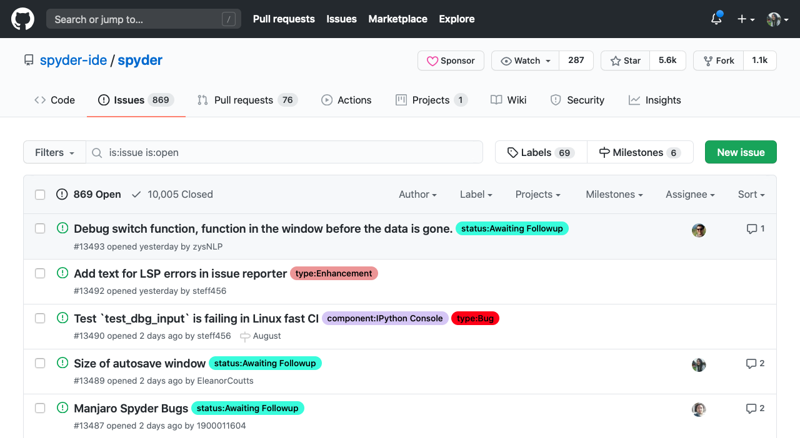
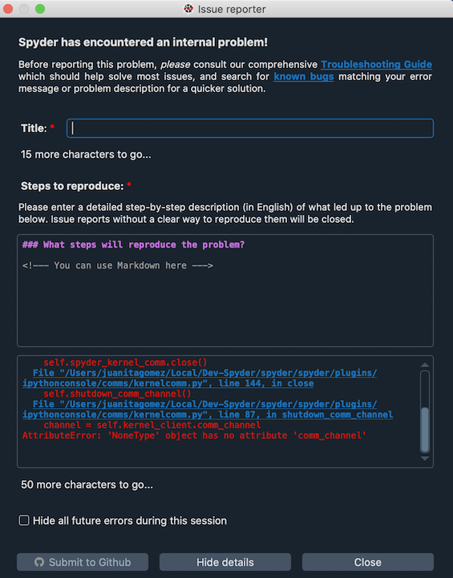
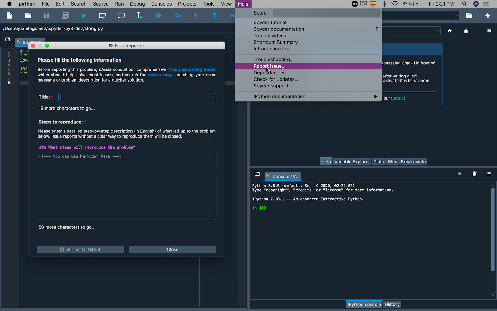
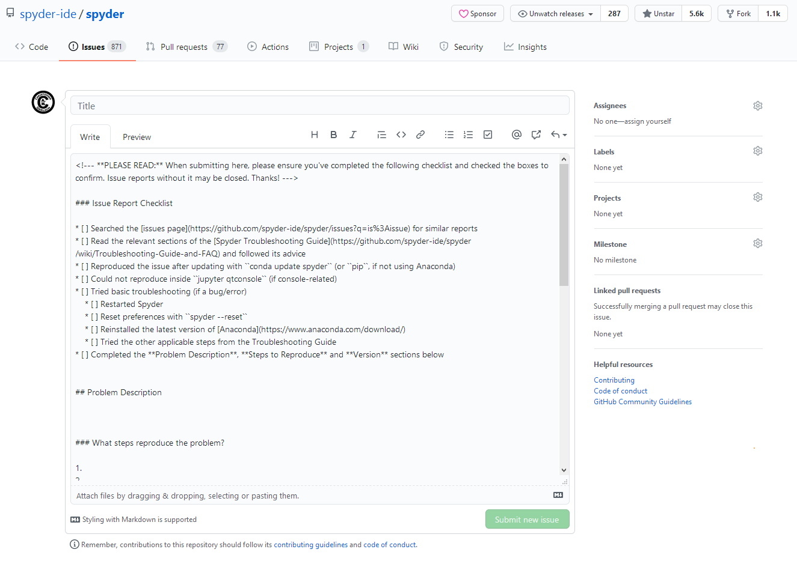
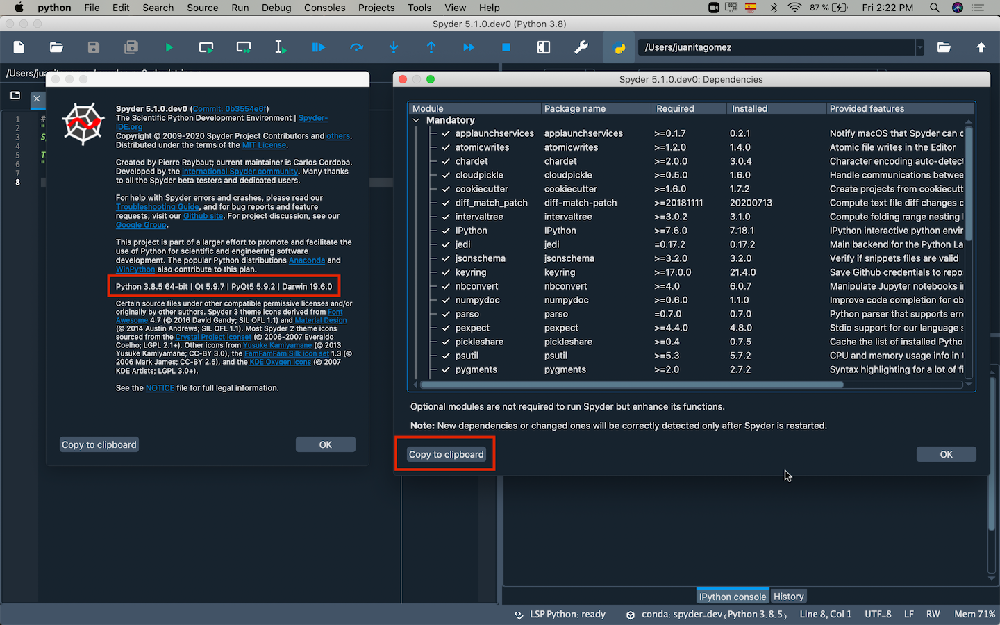
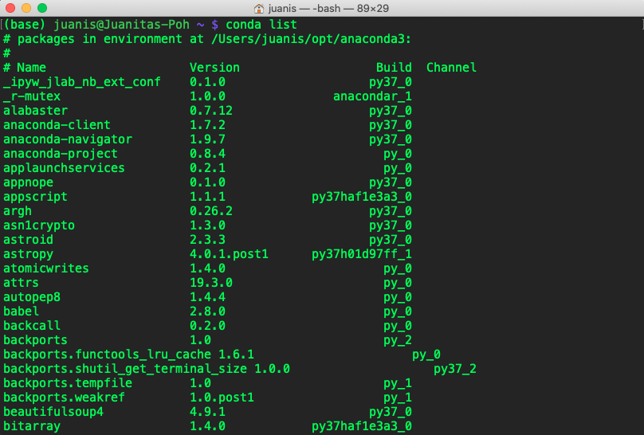

Enviar un reporte#
If you can’t fix your issue with any of the troubleshooting steps, then you’ll want to submit it to our issue tracker so our team can take a look at it for you. You’ll need a GitHub account to do this, so make sure you have one before you begin (a good idea anyway).

Importante
Antes de enviar un issue, asegúrate de haber buscado una descripción del problema y una parte relevante del seguimiento de errores, tanto en Google como en el issue tracker de Spyder para asegurarte de que no ha sido enviado antes. Si ese es el caso, tu problema se cerrará como un duplicado.
Formas de enviar un issue#
Hay varias maneras de enviar un issue, ya sea desde Spyder o GitHub directamente. Por orden de preferencia y dificultad:
If Spyder presents an error dialog you can submit an issue directly from it. You will have to fill out a title for your issue, specify the steps that lead to this problem and click submit to GitHub. This will prefill an error report with your environment details, key versions and dependencies and automatically insert the error/traceback for you.

If Spyder opens and your issue does not involve an error dialog, the best way to do so is to simply select Report issue from the Help menu, which manually brings up the issue report form and fills in the key information about your Spyder installation. Describe the issue you’re experiencing (including any error/traceback information) along with a descriptive title, and click Submit to GitHub.

If Spyder won’t launch, you can submit a report manually at our issues page on GitHub. Unlike the above, you’ll need to manually provide the versions of everything (Spyder, Python, OS, Qt/PyQt, Anaconda, and Spyder’s dependencies) as listed in the error report template; see below for more on that.

{kind=link}
Una vez que envíes tu informe, nuestro equipo intentará responderte lo antes posible, a menudo dentro de 24 horas o menos, para tratar de ayudarte a arreglarlo.
Qué incluir en tu informe#
Por favor, incluye la mayor cantidad posible de la siguiente información en tu informe para aumentar las posibilidades de obtener ayuda relevante y facilitar nuestra capacidad de diagnosticar, reproducir y resolver tu problema.
Los elementos clave, en orden de prioridad son:
El mensaje de error completo o el traceback copiado y pegado, o ingresado automáticamente, tal como aparece en Spyder:
Los informes autogenerados directamente desde el cuadro de diálogo de error deben incluir esto automáticamente, pero compruébalo dos veces para asegurarte.
Puedes copiar y pegar esto de la sección Mostrar detalles en el diálogo de error.
Si no está presente o no se muestra un diálogo, también puedes encontrarlo impreso en la Terminal interna de Spyder, ubicada en el menú Ver en .
Si lo prefieres, o si Spyder no se inicia, puede iniciar Spyder desde tu línea de comandos (o Anaconda Prompt en Windows) con
spydery copiar la salida impresa allí.
Nota
Si estás reportando un comportamiento específico en lugar de un error, o el mensaje no explica completamente lo que ocurre, por favor describe en detalle lo que realmente ocurrió, y lo que esperabas que Spyder hiciera.
Una descripción detallada y paso a paso de exactamente lo que hiciste antes de que ocurriera el error, incluyendo código de ejemplo que lo provoque, si es aplicable.
Information about Spyder and its environment as listed in the error report template, which you can find under About Spyder in the Help menu; along with its key dependencies, shown in the dialog under (click the Copy to clipboard button to copy them).

Si Spyder no se lanza, pega la salida de
lista condadesde tu línea de comandos (o Anaconda Prompt en Windows) en la sección Dependencias de la plantilla de incidencias.
How you installed Spyder and any other relevant packages, e.g. standalone installers, Miniforge/Miniconda/Anaconda, WinPython, Brew, MacPorts, pip, etc. and whether Spyder has worked before since you installed it.
Qué más intentaste para solucionarlo, por ejemplo, siguiendo esta guía o buscando en otros sitios web, y si has intentado reproducir el problema en una QtConsole independiente, IPython, y/o el intérprete de Python simple.
Si el problema ha ocurrido de manera consistente en situaciones similares o si es la primera vez que lo observas.
Cualquier otra cosa especial o inusual sobre tu sistema, entorno, paquetes o uso específico que pueda tener algo que ver con el problema
{kind=link}
Truco
Si incluyes bloque(s) de código en tu informe, asegúrate de precederlos y seguirlos con una línea de tres comillas invertidas ``` para obtener un bloque de código como este:
print("Your Code Here!")
De lo contrario, es probable que tu código contenga un formato aleatorio o falta de indentación, lo que dificultará examinarlo y ejecutarlo para reproducir y solucionar tu problema.